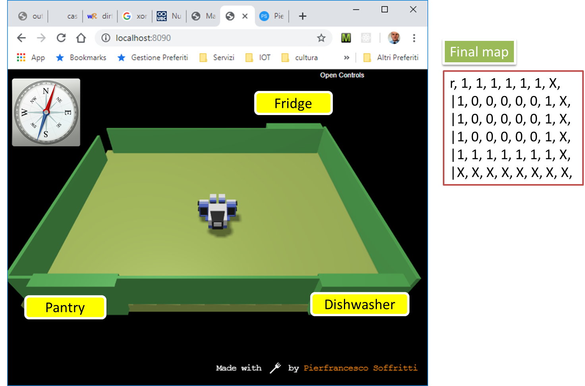
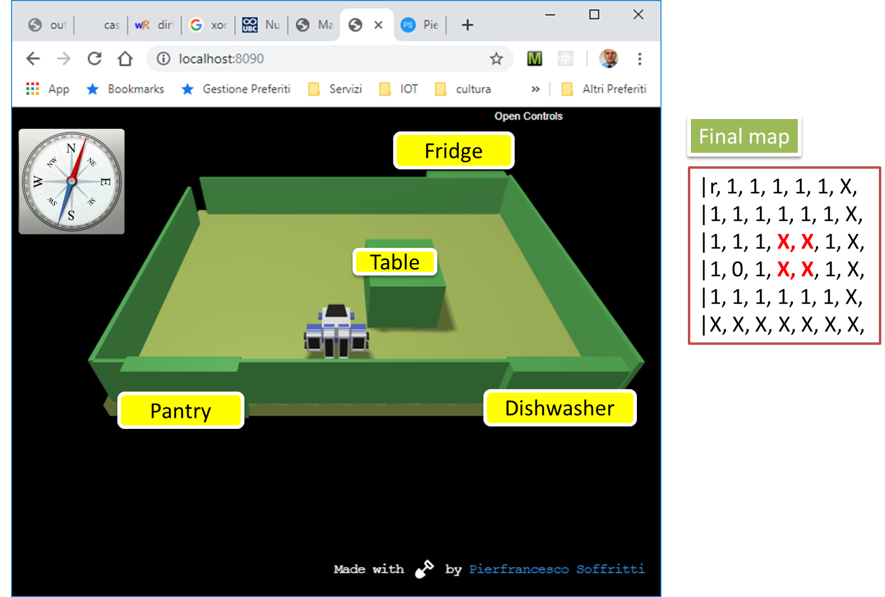

72939 - LABTfBo19 | An approach for the butler project
LabISS-lectures site
Architecture
Running the application
PREPARE
ACTIVATE THE
VIRTUAL ROBOT SERVER
ACTIVATE THE
MQTT BROKER
(mosquitto)
ACTIVATE THE ROBOT BASIC-MIND
RUN
MainCtxRobotMain
IN it.unibo.eclipse.qak.robotMinds19
RUN
MainCtxRobotAppl
IN it.unibo.eclipse.qak.robotMinds19 (just a test)
LOOK AT logFiltered.txt (the walls found as obstacles)
BUSINESS LOGIC
RUN
MainCtxBoundaryPlanned
IN it.unibo.eclipse.qak.planning19 => LOOK AT roomMap.txt (the map of the room)
RUN
MainCtxRoomExplore
IN it.unibo.eclipse.qak.planning19 => LOOK AT roomMapWithTable.txt (the map of the room with the table)
RUN
MainCtxWorkInRoom
IN it.unibo.eclipse.qak.planning19 => The robot goes FROM (0,0) to (5,3)
M2M INTERACTION
RUN
MainCoapClientModelRobot
IN it.unibo.eclipse.qak.robotMinds19
RUN
resourceObserverCoapClient
IN it.unibo.eclipse.qak.robotMinds19
HUMAN-MACHINE INTERACTION (front end)
RUN
node frontendServer
IN it.unibo.frontend19/nodeCode/frontend
Scenarios (incremental design and development)
1
roomboundaryplanned.qak
Builds a map of the
empty room
by using the planner.

2
roomexplore.qak
If no map exists, explore the room boundary by using the planner;
afterwards, finds the position of the table

3
workinroom.qak
The robot plans a trip from home to the east part of the table and executes it.
By AN Unibo-DISI